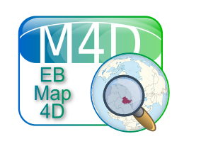

EBMap4D

Updates
Die Geo-Anwendung, die noch in der alten Firma entstand, wurde kräftig überholt und funktioniert immer noch. Sie ist sowohl als traditionelle Anwendung lauffähig, als auch als Applet im Browser oder verwendbar als Komponente in eigenen Anwendungen.

Man könnte sich natürlich zunächst fragen: "Warum eine neue Map-Anwendung?". Nun, darauf gibt es viele mögliche Antworten und es wird immer eine dabei sein, die den Fragenden nicht zufrieden stellt. Wir wollten damals in der Lage sein, unseren Kunden maßgeschneiderte Dienstleistungen im Bereich Geoinformatik mit Schwerpunkt auf solche Karten anzubieten, die einen direkten Bezug zum jeweiligen fachlichen Problem hatten. Dazu benötigt man zunächst einen eigenen Tile-Server - aber natürlich auch eine Anwendung, die es ermöglicht, ohne großen Aufwand die Präsentation der Karten umzustellen. Dazu kamen im Laufe der Zeit weitere Anforderungen, die zum einen - wie zum Beispiel die Präsentation weiterer Layer aus vektorbasierten Daten - fachlich getrieben waren, zum anderen aber auch reine Showcase-Features darstellten.Nach Abschluß der Überholungsarbeiten steht die Anwendung als leicht erweiterbares Framework für die Implementierung von Anwendungen zur Lösung von geoinformatischen Aufgaben zur Verfügung. Sie ist in der Lage, verschiedenste Layer ein- und auszublenden. Jeder Layer hat eine Datensicht, durch die er konfiguriert werden kann und einen Painter, der letztlich für die Darstellung verantwortlich ist. Die Layer können umsortiert werden. Die Sortierung bestimmt, welcher Layer welche anderen verdeckt.
Es ist möglich - daher das "4D" im Namen - in die Datensicht der Layer einen zeitlichen Aspekt einzuführen: Die Anwendung versteht zeitliche Einschränkungen: Zur Zeit wird nur ein Intervall pro Layer unterstützt - wird es konfiguriert, so werden nur Features in die Karte eingezeichnet, deren Start- oder Endzeitpunkt in dem für diesen Layer eingestellten Intervall liegen.
Die von der Anwendung standardmäßig benutzten Karten stammen aus dem Openstreetmap-Projekt, es können aber auch leicht andere substituiert werden.
Aktualisierung vom 8. Juni 2013
Screenshots
{kind=link}
{kind=link}
{kind=link}
Artikel, die hierher verlinken
Styles für GeoJSON in EBMap4D
22.08.2021
Ich habe bereits darüber berichtet, dass EBMap4D jetzt über die Möglichkeit verfügt, beliebige GeoJSON-Layer darzustellen. Nun ist die Anwendung um die Möglichkeit erweitert worden, in diesen GeoJSON-Daten enthaltene Stilinformationen für die Darstellung zu nutzen.
GeoJSON in EBMap4D
31.07.2021
Ich habe die Anwendung EBMap4D einer Generalüberholung unterzogen und neue Features hinzugefügt...
Elektronisches Fahrtenbuch in EBMap4D
02.02.2019
Ich habe EBMap4D um einen weiteren Layer erweitert, der mir als elektronisches Fahrtenbuch dient
Layers über Java Service Provider Infrastructure
25.01.2019
Nachdem Berichte über Neuigkeiten in EBMap4D schon längere Zeit her sind und die letzten Artikel sich fast ausschließlich mit Tile-Servern beschäftigt haben, hier nun ein neues Update zu EBMap4D.
Satelliten-Layer
19.01.2019
Ich habe im Zuge der letzten erfolgreichen Mars-Landung ein Thema wiederbelebt, das schon länger auf meiner Platte geschlummert hat:
Tile-Server für Openstreetmap in LXC II
10.07.2018
Ich beschrieb vor einiger Zeit den Antrieb dafür, einen eigenen Tile-Server zu betreiben. Damals war als System Ubuntu 12.04 in LXC-Containern auf einem Ubuntu 13.04-Wirt zum Einsatz gekommen. Ich habe das System renoviert und auf Ubuntu 16.04 (Container und Wirt) angehoben
Hillshading-Server für Openstreetmap in LXC II
10.07.2018
Nachdem ich bereits den OpenStreetMap-Tile-Server aktualisiert habe, folgte nun der für die Höhen- (Relief-) Informationen.
Beliebig große Karten exportiert als PNG
10.01.2016
Neuen Funktionalitäten für die Anwendung EBMap4D: Sie ist nun in der Lage, beliebig große Karten als Bitmapgraphiken zu exportieren
EBMap4D & Satellitenpositionen
14.11.2015
Die Geo-Anwendung EBGeo4D ist um einen neuen Layer reicher - mit ihm kann man die auf die Erdoberfläche projizierten Positionen von Satelliten visualisieren.
EBMap4D & GeoJSON
04.06.2014
Die Geo-Anwendung EBGeo4D ist wiederum ein wenig erweitert worden: Es ist jetzt möglich, Features zu selektieren und zu exportieren.
Überblickskarte in EBGeo4D und dWb+
18.04.2014
Die Geo-Anwendung EBGeo4D verfügt bereits über eine Lupenfunktion die es erlaubt, Details genauer zu untersuchen ohne die aktuelle Zoomstufe zu verlassen. Nun wurde eine zuschaltbare Übersichtskarte implementiert, die den aktuellen Kartenausschnitt in seinen globalen Zusammenhängen einordnet.
GPS-Tracks in dWb+ und EBMap4D
09.03.2014
Neuen Funktionalitäten für die Anwendung EBMap4D und dWb+ zur Arbeit mit aufgezeichneten GPS-Tracks
Ortsbezüge in dWb+
27.10.2013
Die neuen Funktionalitäten in der Anwendung EBMap4D wurden ebenfalls in dWb+ integriert
EBMap4D Bitmap-Layer
11.07.2013
Die Geo-Anwendung EBGeo4D wurde um einige Features erweitert: es existiert jetzt die Möglichkeit, nicht mehr wie früher Layer an- und abzuschalten, sondern man kann ihre Deckkraft stufenlos einstellen. Außerdem beherrscht die Anwendung jetzt den Umgang mit Bitmap-Layern.


Vor 5 Jahren hier im Blog
-
BeanInfo durch Runtime-Annotations (Gist)
25.02.2018
Wie bereits im vorangegangenen Artikel zu diesem Thema wollte ich die Idee der BeanInfo ohne explizite BeanInfo-Klassen eigentlich ruhen lassen - ich habe mich aber aufgerafft, zumindest die prototypische Implementierung als Gist zu veröffentlichen.
Weiterlesen...
Tags
Android Basteln C und C++ Chaos Datenbanken Docker dWb+ ESP Wifi Garten Geo Git(lab|hub) Go GUI Gui Hardware Java Jupyter Komponenten Links Linux Markdown Markup Music Numerik PKI-X.509-CA Python QBrowser Rants Raspi Revisited Security Software-Test sQLshell TeleGrafana Verschiedenes Video Virtualisierung Windows Upcoming...
Neueste Artikel
- String Concatenation vs VarArgs in Java
Neulich stolperte ich in meinem $dayjob im Java-Quelltext wieder einmal über ein logging-Statement, das die Meldung per String-Concatenation zusammensetzte. Bevor ich daraufhin wünschte, dass alle diese Statements auf VarArgs umgestellt werden, wollte ich mir eine solide Argumentationsgrundlage schaffen und stürzte dadurch in einen Kaninchenbau...
Weiterlesen... - LinkCollections 2023 I
Nach der letzten losen Zusammenstellung (für mich) interessanter Links aus den Tiefen des Internet von 2022 folgt hier gleich die erste für dieses Jahr:
Weiterlesen... - Expect-Dialog-CA Version 2.4.0
CA-Management-Lösung in Version 2.4.0 fertiggestellt und auf Github verfügbar
Weiterlesen...
Manche nennen es Blog, manche Web-Seite - ich schreibe hier hin und wieder über meine Erlebnisse, Rückschläge und Erleuchtungen bei meinen Hobbies.
Wer daran teilhaben und eventuell sogar davon profitieren möchte, muß damit leben, daß ich hin und wieder kleine Ausflüge in Bereiche mache, die nichts mit IT, Administration oder Softwareentwicklung zu tun haben.
Ich wünsche allen Lesern viel Spaß und hin und wieder einen kleinen AHA!-Effekt...
PS: Meine öffentlichen GitHub-Repositories findet man hier - meine öffentlichen GitLab-Repositories finden sich dagegen hier.